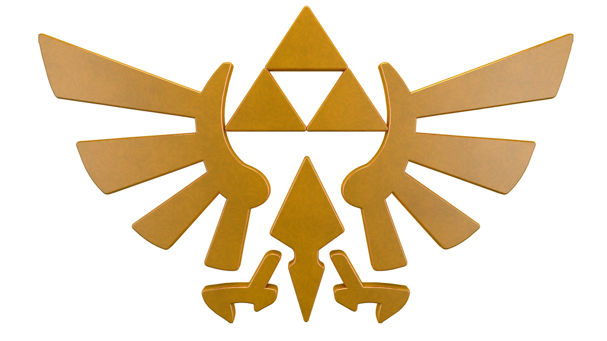

Olá, usuário!


Apresentado em The Legend of Zelda como o monstruoso Príncipe das Trevas e antagonista central da franquia, Ganon passou por um grande desenvolvimento ao longo da longa série, de um simples monstro a um poderoso feiticeiro com motivações mais profundas para suas ações. Ele é um dos três personagens mais importantes da série, ao lado de Link e da Princesa Zelda . Com as origens do infame monstro reveladas em Skyward Sword , como a encarnação do ódio do Rei Demônio Demise por aqueles com o sangue da Deusa e o espírito do herói (ou, de acordo com a Hyrule Historia , a reencarnação do próprio Demise), Ganon está destinado a reencarnar eternamente para buscar a dominação mundial, o que significa que ele é imortal, ao contrário de Link e Zelda. [ Na maioria dos casos da série, no entanto, ele retorna após ser ressuscitado ou quebrar um selo. Four Swords Adventures é uma exceção notável, apresentando um Ganondorf reencarnado. O Ganondorf original de Ocarina of Time aparece na maioria dos jogos posteriores desde então, fazendo com que ele se destaque de outros antagonistas como o mesmo personagem de jogo para jogo.
Com sua sede insaciável de governar o mundo com punho de ferro, Ganon é quase sempre o possuidor da Triforce do Poder , imbuída com a essência da Deusa Din . Essa relíquia divina torna Ganon inimaginavelmente forte e lhe concede poder místico ilimitado, tornando-o uma grave ameaça para a terra de Hyrule e para o mundo. Além disso, Ganon é a fonte da escuridão. Como profetizado, o único capaz de derrotar Ganon é o Herói escolhido pelas Deusas , Link, o possuidor da Triforce da Coragem , embora ocasionalmente, como visto em alguns jogos, ele precise da ajuda de Zelda, a princesa de Hyrule e possuidora da Triforce da Sabedoria (e raramente, de outros), devido à grande força e resistência de Ganon.
Ganon recebe sua primeira história de fundo em A Link to the Past . Foi revelado que ele nem sempre foi o enorme demônio semelhante a um javali apresentado em The Legend of Zelda . Como explicado por algumas das sete Donzelas , Ganon já foi um homem chamado Ganondorf Dragmire , líder de um grupo de ladrões. Com a ajuda de seus seguidores, he se tornou o primeiro a entrar no Reino Sagrado em eras. Ele reivindicou a Triforce , transformando o Reino Sagrado no Mundo Sombrio e a si mesmo em um ser extremamente poderoso. No entanto, ele frequentemente ficava preso no Reino Sagrado devido aos esforços combinados dos Cavaleiros de Hyrule e dos Sete Sábios .
Em Ocarina of Time , é dito que a primeira encarnação de Ganondorf nasceu como um poderoso feiticeiro Gerudo . As bruxas gêmeas Gerudo, Koume e Kotake, foram suas mães adotivas. Os Gerudo são uma raça de guerreiras e ladras, composta exclusivamente por mulheres, das quais nasce apenas um homem a cada século. Ganondorf é esse homem. Por isso, ele é, por direito de nascimento, o Rei dos Gerudo. Nabooru , a segunda em comando, menciona ao jovem Herói do Tempo no Templo Espiritual que nunca seguirá Ganondorf porque ele roubou de mulheres e crianças e até assassinou pessoas.
Ganondorf usa sua posição política para trair o Rei de Hyrule , bem como sua astúcia, habilidades de manipulação e poderes místicos para obter acesso ao Reino Sagrado, a morada da Triforce. Contudo, devido ao seu coração desequilibrado, ele não obtém a Triforce completa; resta-lhe apenas a Triforce do Poder, que utiliza com grande eficácia na sua conquista de Hyrule. Mesmo assim, o Rei Maligno não mede esforços para recuperar as outras peças escondidas dentro de dois indivíduos escolhidos pelo destino para se tornarem verdadeiramente invencíveis: a Princesa Zelda e Link, portadores da Triforce da Sabedoria e da Triforce da Coragem, respectivamente.
Em The Wind Waker , o personagem de Ganondorf recebe maior profundidade e um motivo mais claro para sua vilania. Durante a batalha final, he afirma que seu desejo de conquistar Hyrule deriva da vida árdua à qual ele e seu povo foram submetidos vivendo no inóspito Deserto Gerudo , uma terra devastada por tempestades de areia e um clima instável, que ele compara desfavoravelmente à paisagem verdejante do Campo de Hyrule e à vida amena vivida pelos Hylians .
Ganon renasce em Four Swords Adventures , onde, embora ainda seja um Gerudo, ele não é o rei. Ele começa sua transformação no Rei das Trevas violando o tabu Gerudo na Pirâmide e buscando o Tridente . Em Skyward Sword , Ganon é finalmente revelado como a encarnação do ódio eterno do Rei Demônio Demise por aqueles com o sangue da Deusa e o espírito do Herói Lendário , por uma maldição mortal lançada sobre Link após derrotá-lo no jogo. Assim, ele está destinado a reencarnar eternamente, tornando-se a fonte de vários conflitos na história de Hyrule, que envolvem muitas encarnações diferentes da Princesa Zelda e de Link.
Em Tears of the Kingdom , uma nova encarnação de Ganondorf estava presente durante uma das fundações de Hyrule. Permanece incerto qual iteração de Hyrule a fundação retrata. No entanto, é possível que a fundação em que ele aparece tenha sido precedida por uma Hyrule destruída.